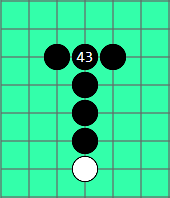

複雜進攻的防點
在碰到複雜的進攻局面時，任何一步都可能左右最終的勝負，往往想計算防點時，卻苦於進攻方式太多，不知從何處下手，這裡提供一個計算技巧給大家參考。
本章以VC3的攻擊為例，需要先知道如何尋找VC3的防點。
１找出一組最簡單的勝法，以減少需要計算的防點
２找出影響此勝法的所有防點
３計算這些防點，建議從最強的防點開始計算，剔除失敗的防點，若全部防點都無效，那可判定此局面已終結，若有效防點不只一個，再從中做選擇

就拿基本勝型來說，假想對方下出一個基本的［死四活三］，我們將死四和活三看成兩組進攻
第一步，找最簡單的勝法，死四獲勝最簡單
第二步，死四的所有防點只有一個
第三步，計算所有防點，對手還是能將活三變成活四取勝
那就可以確定這局面對方已經必勝
第一步，發現Ａ為黑方一步四三的勝法
第二步，找出Ａ勝法所有防點，共７個，即棋盤上有○的位置
第三步，計算所有防點，若防Ａ，黑方可下Ｂ取勝，防在１的位置，同樣不能阻止Ｂ點，勝法相同可快速剔除，只剩下一個防點２，但黑方仍有其他勝法（可點棋盤○看勝法）
確定此局面黑方必勝
第一步，發現Ａ為黑方一步四三的勝法
第二步，找出Ａ勝法所有防點，共５個，即棋盤上有○的位置
第三步，計算所有防點，若防Ａ或１，黑方可兩步四三，若防在２，黑有三步四三
確定此局面黑方必勝
有一種四手連五勝詰棋 ，非常適合練習計算防點
故名思義，題目限制四顆子就要形成五，超過不算正解
常見的解法是第二手就做出四三
如題，黑先四手連五勝，為方便練習，已先把第一手看似有兩種獲勝方式的點標出，但只有一點是正確的，
其他點白棋都可以找到共用的防點
實戰中雖沒有限制使用子數，但常運用到類似的計算方法
注意事項：
一般的局面不需要算那麼細，選擇重點計算即可，只有在攸關勝負的關鍵時刻才需要如此細算
不要只注意計算防守，而忽略可以攻擊的局面
實戰賞析
這譜是小ｕ在２０１０世團賽的對局
對手黑方27，若28不理，黑方做了衝四勝，白棋不得不防
小ｕ發揮強大的計算力，臨場找到唯一防點Ａ，若先Ｂ再Ａ，黑仍可勝